Plaisir 2006, rencontre indoor

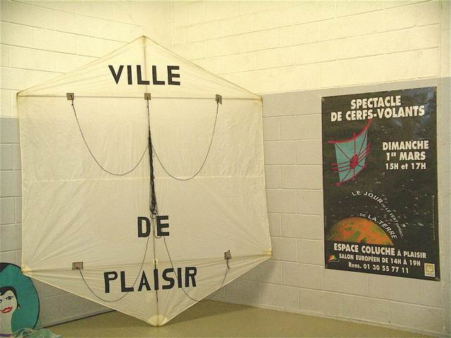
Plaisir, mon deuxième indoor de la saison. Beau gymnase, bien entretenu, assez grand. La déco de la salle est commencée, le grand Rokkaku de la ville trône dans un coin...

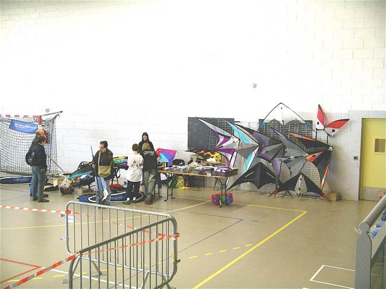
Dominique Miquet, après moult allers-retours à son Kangoo a fini d'installer son stand et de monter ses cerfs-volants sur les grilles proposées...

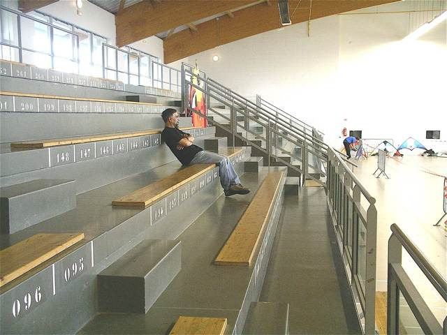
Evidemment, le public le matin est assez limité...

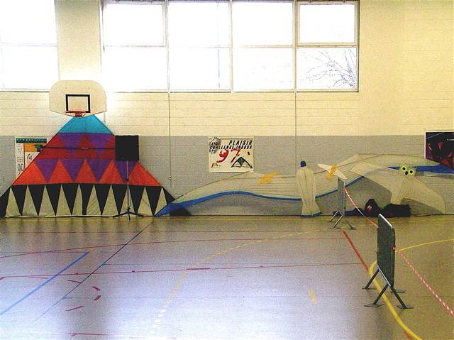
Je participe à la déco en montant Megoel. Lui aussi est grand (8 m, je rappelle), mais je le ferai un peu voler, tout droit et en marchant vite, même pas besoin de courir...

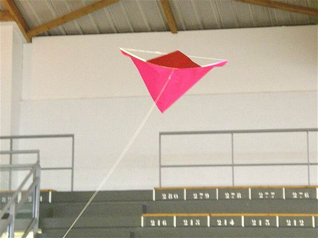
Surprise, une Jessy ! L'épidémie se répand, on en trouve maintenant même en indoor ! Celle-ci est en papier cadeau, armature en grosses pailles à boire, la vergue se pliera d'ailleurs rapidement au croisement.

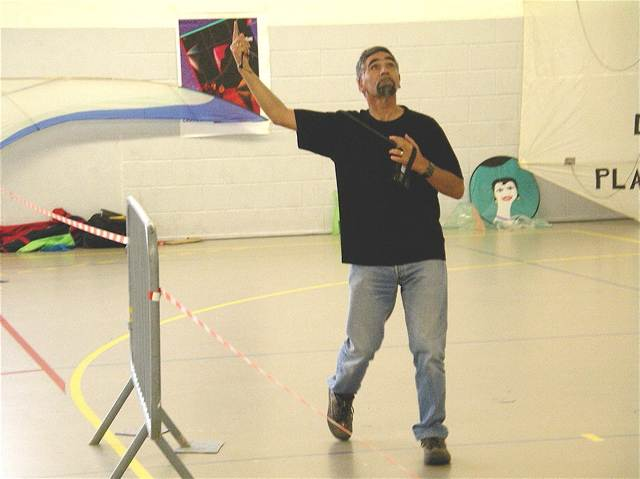
Evidemment, c'est à un monofiliste connu, Emmanuel, qui n'habite pas bien loin ! Il a pu réparer la vergue avec une brindille enfilée dedans !

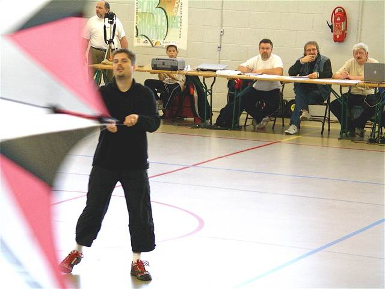
Mais la matinée est consacrée aux figures imposées, 2 lignes et 4 lignes, avec 3 catégories : Novices, Intermédiaires, Experts. Le jury suit et note sur des feuilles très détaillées, pas d'improvisation ici !

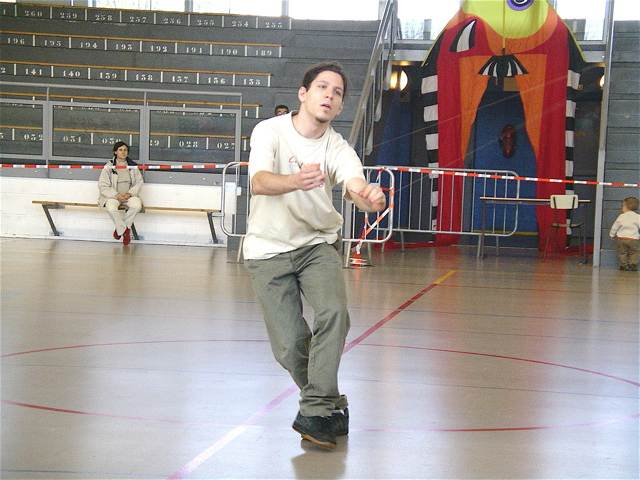
Yann, lui, pilote son 2 lignes d'une main, avec quelques tractions de l'autre sur une ligne en cas de besoin. Sa gestuelle de danseur reste inimitable.

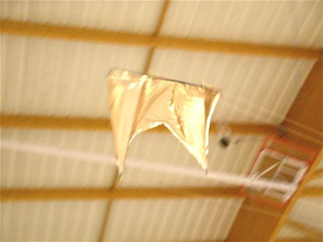
En 4 lignes, que des Révos, ou plutôt des copies plus ou moins efficaces, comme cette version en milar !

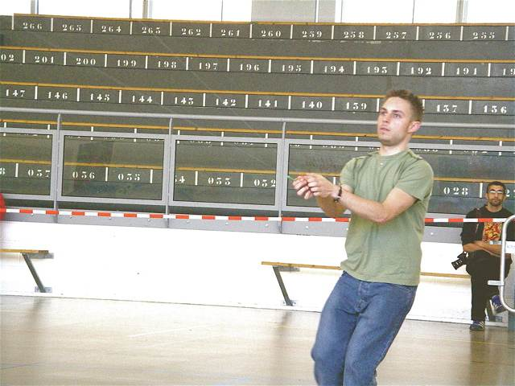
Raphaël est égal à lui-même, les autres m'ont paru moins bons aujourd'hui, je ne sais pas pourquoi... Beaucoup d'erreurs, d'imprécision... Et on ne peut même pas accuser le vent !

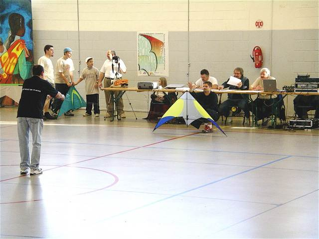
Gérard Brachet va se lancer, dans son club, mais sans illusions compte tenu de son entraînement limité.

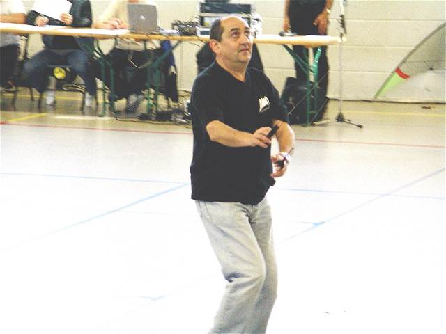
Il est pourtant très concentré sur sa routine ! Lui au moins, il la connaît, à la différence d'autres que je ne nommerai pas !

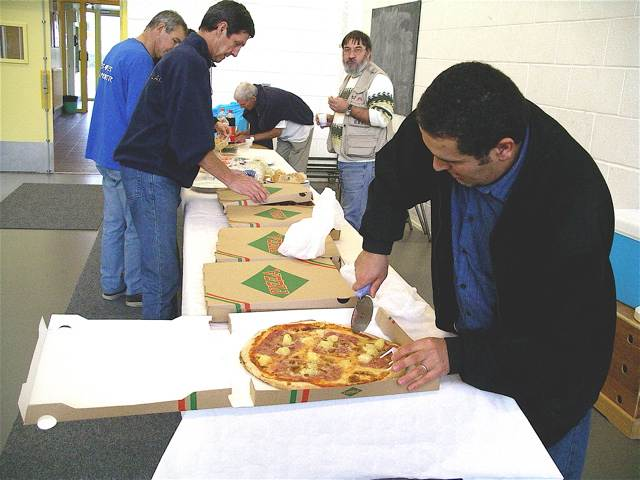
Bon, les imposées sont finies, on peut déjeuner. Au menu, hors d'oeuvre très variés, pizzas toute chaudes livrées au bon moment, fromage, pâtisseries !

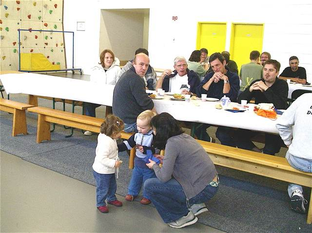
Le fils de Dominique commence déjà à draguer, sous la surveillance de la Maman quand même !

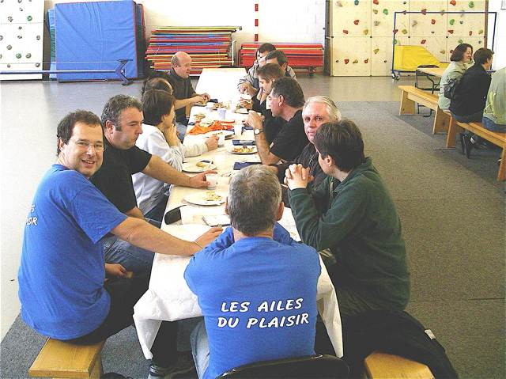
Et on mange sur des tables avec une nappe et des sièges, quel luxe, on peut se décontracter plus facilement !

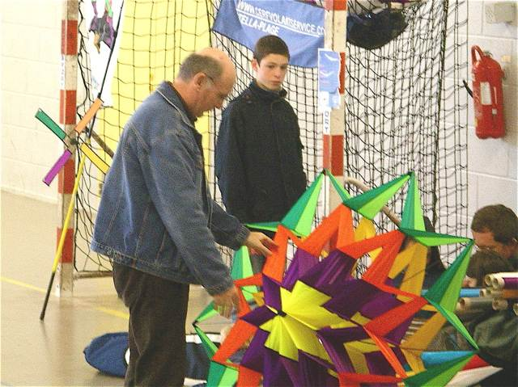
L'après-midi, il viendra beaucoup plus de monde. Pas plus de compétiteurs, mais du public et des visiteurs de marque, comme Michel Durup...

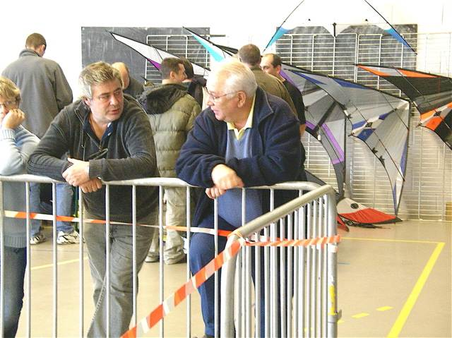
...ou Tonton Jouny qui a toujours un cerf-volant nouveau à montrer (un transparent, cette fois-ci !)...

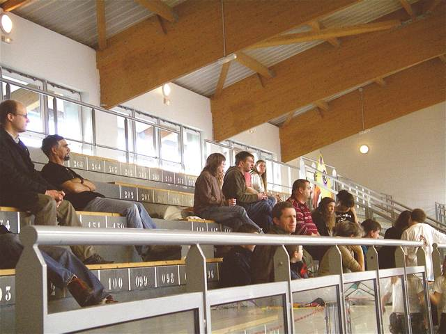
Il est venu aussi des visiteurs qui resteront un bon moment pour apprécier le spectacle : les ballets de la compète ou les shows divers de pilotables ou de monofils !

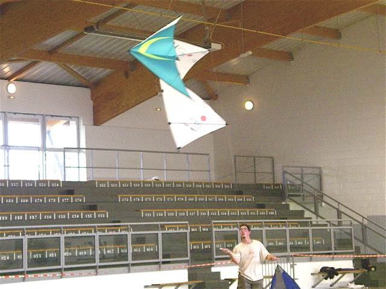
On revoit le bizza composite de Révo et de delta que son propriétaire manie avec de plus en plus d'aisance...

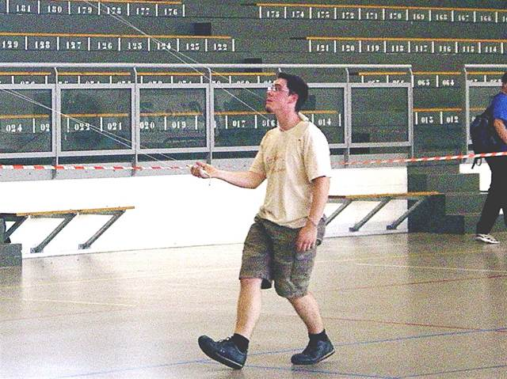
Et maintenant, il fait même du cirque autour, avec la poignée entre les dents ou derrière la tête !

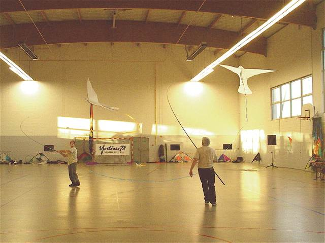
On revoit aussi avec plaisir le duo de monofils "oiseaux" de Yann, avec un complice, cette fois, et un ruban entre les oiseaux !

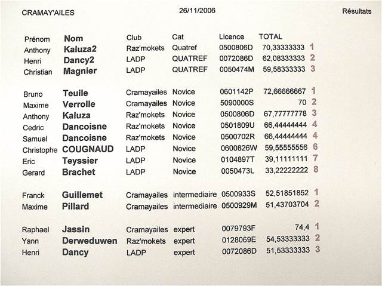
Bon, les meilleures choses ont une fin. Remise des prix, publication du classement, et petit pot final avant de prendre la route, merci !

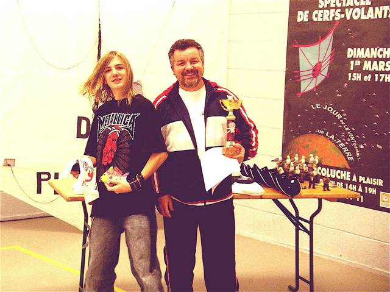
Franck est heureux, il a réussi à taper Maxime (pas moi, un des 2 autres) qui n'a pas volé à son niveau habituel. Franck ne fait pas de figures extraordinaires, mais il connaît les routines, il est bien dans sa musique, et régulier...

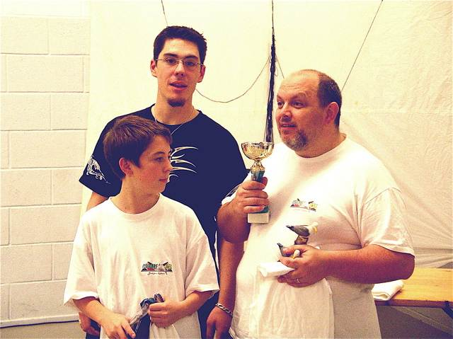
Bruno est heureux aussi, il a gagné dans les Novices. Il a nettement progressé, avant il commettait beaucoup d'erreurs et de chutes qui coupaient sa routine...

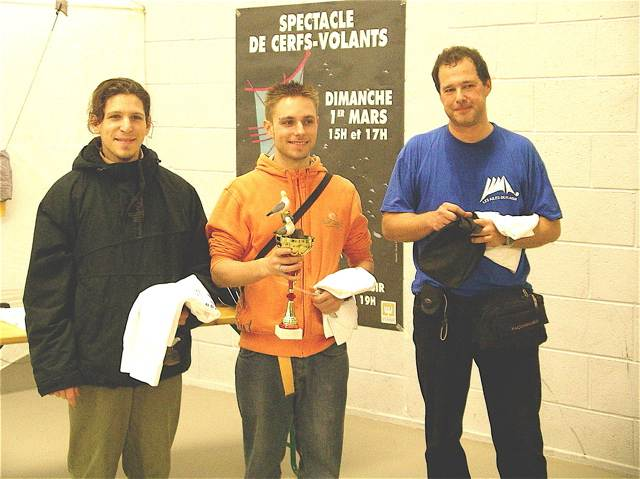
Chez les Experts, c'est Raphaël qui l'emporte, ce n'est pas une surprise, il a été champion de France 2005 !
Mes oiseaux ont bien volé, avec leurs derniers réglages. Une bonne journée à tous points de vue, accueil, ambiance, spectacle, même s'il a fait tellement beau dehors qu'on aurait eu envie de faire du cerf-volant !